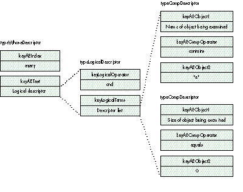

The Object Support Library provides convenient mechanisms for scriptable
applications to support complex expressions that may return multiple results (such
as every item of container "b" whose name contains "a"). However, the performance of
applications that rely on the default behavior is nowhere near what it could be if the
application took on some of the work itself. This article shows you how to gain ten- to a
hundred-fold increases in the performance of whose clause resolution in your
scriptable application. If your application is not yet scriptable, you'll find that the
foundation classes presented in this article do most of the work required to support
scripting.
One of the greatest strengths of AppleScript is its built-in ability to do complex
operations on groups of objects in a single line of script. For example, suppose you
have a set of shapes in a scriptable drawing program, and you'd like to change the color
of all the red shapes to green. In conventional programming languages, you'd need to
write a loop that iterates over each object in the set, tests to see if its color is red, and
then does a "set color to green" command for each red object that was found. Using
AppleScript, you can do the same operation with the single statement set color of
every shape whose color is red to green. In that statement, every shape
whose color is redis called a whose clause, and it's the inclusion of whose clauses
that makes AppleScript the powerful language it is.
You may at first doubt that using a whose clause is much better than writing the
equivalent script with a loop. After all, the direction of modern processor design has
been toward simplicity of the instruction set; RISC chips are able to gain incredible
performance improvements by doing optimizations that aren't possible in CISC chips.
Also, when all is said and done, the whose clause must finally execute the same
loop-and-compare algorithm that you'd be forced to use if you wrote the script with
the basic flow-of-control script commands, such asdo-while and if-then.
Using a whose clause is, however, much more efficient than the alternative.
AppleScript is based on the client/server paradigm: typically your script, the client,
will be running in one application (usually the Script Editor or a script saved as a
miniapplication), with the application being scripted acting as a server. In this
situation, each script command that's directed at the scriptable application needs to be
transferred between the two applications. Awhose clause is a single script command,
but with the loop approach many commands would need to be sent. Furthermore,
AppleScript allows the scriptable application to reside on a different machine than the
application running the script; if your script is running on a machine in Cupertino,
California, and the server is on, say, Mars, reducing the number of round-trip
messages would have a profound impact on the performance of the script. Remember,
you can currently get only about 30 round-trip Apple events per second, so even if
you aren't sending data to Mars, you'll still do a lot better with fewer events than with
many.
There's another, similar reason that using whose clauses is superior to the equivalent
loop-based script: AppleScript compiles scripts into byte codes that are interpreted
during execution, whereas the individual script commands (once interpreted) are
processed by a scriptable application typically written in a language that's compiled
into machine code (be it 680x0 or PowerPC(TM)). The loop-and-compare script will
execute several lines of script for every item that's compared, whereas the whose
clause is but a single line of script that triggers processing in a compiled application.
It should be quite clear which will take less time to execute.
The Object Support Library (OSL) -- the library that provides the API you use to
make your application scriptable -- enables your application to supportwhose
clauses without requiring you to write a lot of additional code. You only need to provide
an object-counting function and an object comparison function, and the OSL can
resolve whose clauses for you. Since supporting whose clauses allows script writers
to write more efficient scripts, you should always do at least this much. However,
there are two other features of the OSL that can vastly increase the performance of
scriptable applications but are often ignored by application writers: whose clause
resolution (a way for your application to find the objects that match a whose test
without using the OSL) and marking (a mechanism for efficiently handling collections
of objects, such as those satisfying a whose clause). Using whose clause resolution,
with the help of marking, will enable you to get the most out of your scriptable
application. Resolving whose clauses can be a bit tricky, but with a little help from
this article, you'll be on your way in no time.
If your application is not yet scriptable, you'll find the sample code included with this
article (and on this issue's CD) to be invaluable in getting you up and running --
particularly since it contains a lot of reusable code.
Good descriptions of the OSL can be found in the develop articles "Apple Event Objects
and You" in Issue 10 and "Better Apple Event Coding Through Objects" in Issue 12. If
you need a quick review of the OSL and you don't feel like putting down this issue of
develop to dig through your back issues, read on. If you can already generate tokens and
resolve object specifiers in your sleep, by all means skip ahead to the next section.
When AppleScript is processing a script command such as delete paragraph 2 of
document "sample", it converts the command into an Apple event which it sends to
the scriptable application that's referenced by the script. The Apple event's event class
and message ID together specify the verb of the operation being performed -- in this
case delete. The object being operated on is passed in the keyDirectObject parameter
of the Apple event, which is called, naturally enough, the direct parameter of the
event.
The direct parameter is almost always an object specifier -- a descriptor of type
typeObjectSpecifier -- although in some cases it may be something else. For example,
in addition to object specifiers, the Scriptable Finder accepts alias records and file
specifications in the direct parameter of events sent to it. If the direct parameter of an
event is not of type typeObjectSpecifier, you're on your own to convert it into some
format that's understood by your event handler. For descriptors that are of this type,
though, all you need to do is call the function AEResolve, and the OSL will step in and
help your application resolve the object specifier -- that is, locate the Apple event
objects it describes.
Object specifiers are resolved through object accessor callbacks that your application
installs to allow the OSL to communicate with your application during object
resolution. The accessor callbacks must take the description of the object requested by
the OSL (for example, document "sample") and return atoken that describes the
object in terms that the application can understand (for example, a pointer to a
TDocument object). Tokens are passed back to the OSL in an AEDesc, a structure that
contains a 32-bit descriptor type and a handle. Your application has complete control
over what it stores in the token, as long as the AEDesc is valid (that is, it was created
with AECreateDesc).
When the OSL calls your application's object accessor callbacks, it always passes
either a token that represents the containing object (which it got from an earlier call
to one of your object accessors) or a representation of the default container of the
application, which is also called the null container of the application. So, to resolve the
object specifier paragraph 2 of document "sample", the OSL first asks for
document "sample" from the null container. Then it asks the application to provide
a token for paragraph 2 from the token the application provided in response to the
request fordocument "sample". The token that the application provides for
paragraph 2 is returned as the result of the AEResolve call; the application will
presumably use this token to process the Delete event.
Resolving object specifiers is explained in Chapter 6 of Inside
Macintosh: Interapplication Communication. A figure illustrating the process
of resolving object specifiers is on page 6-6.*
Inside Macintosh: Interapplication Communication describes marking as a mechanism
whereby items to be operated on are marked with some flag during resolution (that is,
from the callbacks made by the AEResolve function); then, during execution, each
marked item is processed and the mark is cleared. As described, marking doesn't sound
very interesting and appears to be useful only in fringe cases.
Marking is actually very well suited for use as a general-purpose collection
mechanism whenever the OSL needs to group tokens together to process an object
resolution. For example, if the OSL is resolving the whose clause every shape
whose color is red and there are multiple red shapes, the result of the call to
AEResolve must be a collection of all the tokens that represent red objects. If your
application supports marking, the OSL asks your application to create a special mark
token to represent this collection. After your application provides the OSL with a mark
token, the OSL will ask your application to add the tokens it provided for the red shapes
to the mark token's collection. When AEResolve completes, the mark token is returned
as the result of the resolution.
If your application doesn't support marking, the OSL will create collections of tokens
for you by copying the data from your tokens into a descriptor list (an AEDescList). It
calls the standard Apple Event Manager routines for creating descriptor lists, which
copy the data out of the data handle of the AEDesc and then store the token data
somewhere inside the data handle of the descriptor list; the descriptor type of the
AEDesc is similarly encapsulated.
Dealing with descriptor lists of tokens can be inconvenient, particularly if your
application already supports collections of objects in some other way. The OSL
marking mechanism gives you the flexibility to handle collections in any way that's
convenient for your application.
To support marking, you must pass the flag kAEIDoMarking to AEResolve and
implement the three marking callbacks that are passed to AESetObjectCallbacks: the
create-mark-token callback (called just a "mark-token callback" in Inside
Macintosh), the object-marking callback, and the mark-adjusting callback. The
create-mark-token callback doesn't need to do anything more than create an empty
mark token. The OSL will dispose of this token as usual by calling your token disposal
callback when the token is no longer needed. Listing 1 shows an example
implementation of a create-mark-token callback.
Listing 1. Create-mark-token callback
pascal OSErr CreateMark(AEDesc containerToken, DescType desiredClass,
AEDesc* markTokenDesc)
{
TMarkToken* markToken;
markToken = new TMarkToken;
markToken->IMarkToken();
markTokenDesc->descriptorType = typeTokenObject;
markTokenDesc->dataHandle = markToken;
return noErr;
}
The object-marking callback is passed a mark token created from the
create-mark-token callback and some other token created by one of your application's
object accessor callbacks. Your object-marking callback should add a copy of the other
token into the mark token (or apply a reference count to the token being added),
because the OSL will dispose of the token added to your collection shortly after calling
your object-marking callback. Listing 2 shows one implementation of an
object-marking callback.
Listing 2. Object-marking callback
pascal OSErr TAccessor::AddToMark(AEDesc tokenToAdd, AEDesc
markTokenDesc, long markCount)
{
AEDesc copyOfToken;
TMarkToken* markToken;
// We know that the OSL will only give us mark tokens created with
// our create-mark-token callback, but real code would do a test
// before typecasting.
markToken = (TMarkToken*) markTokenDesc.TokenObject();
// Add a copy of the token to the collection, because the OSL will
// dispose of tokenToAdd after passing it to you. A reference-
// counting scheme is good here.
copyOfToken = CloneToken(tokenToAdd);
markToken->AddToCollection(copyOfToken);
return noErr;
}
The mark-adjusting callback is called to remove ("unmark") tokens from the
collection. Oddly enough, its parameters specify which tokens in the range to keep; all
tokens outside the specified range should be discarded.
Implementing the marking callbacks is trivial. The only real work involved in
supporting marking is handling collections of tokens when they're ultimately received
by one of your event handlers (handling Move events, for example). The amount of code
required to handle the marking callbacks and maintain your own collections is
minimal; in fact, the time you'll save by not having to hassle with descriptor lists of
tokens will more than make up for the implementation cost. You'll find more
information on handling collections of tokens later in this article. Don't put off
marking as an optimization to be done later; incorporate it into the design of your
application from the very beginning.
For more details on the marking callbacks, see Inside Macintosh:
Interapplication Communication, pages 6-53 to 6-54.*
The only thing that a scriptable application needs to do to support whoseclauses is
provide an object-counting function and an object comparison function -- the OSL will
do the rest of the work. When the OSL does a whoseclause resolution, however, it has
no choice but to iterate over every element in the search set, repeatedly calling your
application's object accessor, object comparison, and token disposal callbacks. Huge
performance gains can be realized if you resolve whose clauses yourself, because
you'll avoid the overhead the OSL requires to make these callbacks.
Passing the flag kAEIDoWhose to AEResolve tells the OSL that you'll resolve thewhose
clause yourself. The OSL calls your object accessor with the key form formWhose (see
Listing 3). The key data is a whose descriptor -- that is, an AERecord that describes
the comparison to be performed in the search. Your application should interpret the
whose descriptor and test every element of the container token to see if it matches the
specified criteria. If the whosedescriptor is too complex for your application, you can
return the error code errAEEventNotHandled from your object accessor, and the OSL
will do the resolution for you with the default techniques. This is very useful, as it
allows you to maximize the performance of the most common whose clauses, yet still
support complex whose descriptors that are likely to be encountered only rarely.
Listing 3. Handling formWhose in the object accessor
pascal OSErr MyObjectAccessor(DescType desiredClass,
AEDesc container, DescType /*containerClass*/,
DescType keyForm, AEDesc keyData, AEDesc* resultToken,
long /*hRefCon*/)
{
switch (keyForm) {
// case formAbsolutePosition, and so on
...
case formWhose:
// TWhoseDescriptor is a class that knows how to interpret
// a whose descriptor and test tokens for membership in the
// search set defined by the desired class and the whose
// descriptor.
TWhoseDescriptor whoseDesc(desiredClass, keyData);
// TTokenIterator is a class that knows how to iterate
// over the elements of a token.
TTokenIterator iter(container);
for (iter.Reset(); iter.More(); iter.Next()) {
AEDesc token = iter.Current();
if (whoseDesc.Compare(token) == kTokenIsInSearchSet) {
// Add token to the collection stored in resultToken.
AddTokenToResult(token, resultToken);
}
}
break;
}
return noErr;
}
The astute reader will notice that the scheme presented in Listing 3 is very similar to
the process that the OSL goes through to resolve whose clauses. There are still
optimizations that could be made to speed up the resolution further, but we'll get to
those later. To resolve whose clauses as shown in Listing 3, your application must be
able to do the following:
The first two operations are required of any scriptable application, so yours probably
can already do them. Comparing properties is something your application probably
doesn't do yet, but in the worst case you could always write a few lines of code that call
your property object accessor function, retrieve the data from the resulting property
token, and then compare the descriptor that was returned. Obviously you can do better
than this in terms of performance, and later on we'll investigate how. First, though,
we'll look at how to interpret the contents of a whose descriptor.
THE CONTENTS OF A WHOSE DESCRIPTOR
Earlier I claimed that a whose descriptor was an AERecord, but I lied. A whose
descriptor is actually a descriptor of type typeWhoseDescriptor. Internally, awhose
descriptor is stored just like an AERecord, but you can't extract its parameters unless
you first coerce it to type typeAERecord. In Apple events parlance, this type of
descriptor is called a coerced record; its basic type is typeAERecord, and its coerced
type is typeWhoseDescriptor.
The advantage of coerced records is that they allow clients of the Apple Event Manager
(for example, the OSL) to define new descriptor types for AERecords that define the
context in which the record will be used and specify (by convention) what parameters
the client can expect to find inside it. The disadvantage is that it requires an extra
memory allocation to coerce the descriptor back to typeAERecord before the
parameters of the coerced record can be accessed. This is unfortunate, as one of the
primary goals of performance optimization is to remove extraneous memory
allocations; coercing the descriptor back to typeAERecord is part of the current design
of the Apple Event Manager, though, so there's nothing we can do about it.
There are two parameters inside a descriptor of type typeWhoseDescriptor:
keyAEIndex and keyAETest.
A comparison descriptor (typeCompDescriptor) contains three parameters: two
objects to compare (keyAEObject1 and keyAEObject2) and a comparison operation to
be performed on them (keyAECompOperator). Usually the first object to compare is a
special type of object specifier that indicates a property to compare (for example,
pName), and the second is a literal constant to compare it against (for example, "e").
The comparison operators include contains, begins with, ends with, equal, not
equal, greater than, and a bunch of other relational operators. Because comparison
descriptors can contain object specifiers (and usually do), they can become
arbitrarily complex. You won't be able to resolve them all unless you reimplement the
entire functionality of the OSL, at which point you might as well not call AEResolve
either (thank goodness for errAEEventNotHandled, which allows you to fall back on the
OSL if your application cannot parse a whose descriptor).
Fortunately, logical descriptors are much simpler than comparison descriptors. A
logical descriptor contains two parameters: keyLogicalOperator and keyLogicalTerms.
The logical operator indicates the Boolean logic to apply on the contents of the logical
terms: and, or, or not. The logical terms descriptor is, as you may have guessed, a
list of descriptors whose type is either typeCompDescriptor or typeLogicalDescriptor.
Figure 1 shows the contents of a whose descriptor that corresponds to the script
every item whose name contains "e" and size is 0.
The contents of whose descriptors are described in Inside Macintosh:
Interapplication Communication, pages 6-42 to 6-45.*

Figure 1. Contents of a whose descriptor
PARSING WHOSE DESCRIPTORS
It may look like there can be a lot of different cases to handle in a whosedescriptor,
but it actually doesn't take too much code to convert a whosedescriptor into a format
that your application can understand. The next few listings show how this might be
done. The code presented is somewhat simplified; it doesn't look at the keyAEIndex
parameter of the whose descriptor (kAEAll is assumed), and it recognizes only very
specific formats of comparison descriptors. Even this much of an effort is very useful,
because it will cover about 90% of the whose clauses that your application is likely
to encounter, and it's still possible to return errAEEventNotHandled and allow the OSL
to take over for the rest. If you're expecting me to fall back on every developauthor's
favorite phrase, "This impossible task is left as an exercise for the reader," you're in
for a surprise. The sample code on the CD will parse any valid whose descriptor
passed to it and never falls back on the default handling provided in the OSL.
The top-level routine, ParseWhoseDescriptor, simply extracts the keyAETest
parameter and passes it to ParseWhoseTest, returning the resulting search
specification. These two routines are shown in Listing 4. (A search specification is an
application-defined object that knows how to test tokens for membership in the search
set defined by the whose descriptor; see the sample code on the CD for the
implementation of the search specifications used in these listings.) ParseWhoseTest
examines the type of the descriptor (either logical or comparison) and then extracts
the appropriate parameters and passes them to either ParseLogicalDescriptor or
ParseComparisonOperator, whichever is appropriate.
Listing 4. Interpreting the contents of a whose descriptor
TAbstractSearchSpec*
ParseWhoseDescriptor(TDescriptor whoseDescriptor)
{
TAbstractSearchSpec* searchSpec = nil;
TDescriptor testDescriptor;
whoseDescriptor.CoerceInPlace(typeAERecord);
// Real code would call whoseDescriptor.GetDescriptor(keyAEIndex)
// and at the very least check to see that its value is kAEAll,
// and fail with errAEEventNotHandled if it isn't.
testDescriptor = whoseDescriptor.GetDescriptor(keyAETest);
searchSpec = ParseWhoseTest(testDescriptor);
testDescriptor.Dispose();
return searchSpec;
}
TAbstractSearchSpec* ParseWhoseTest(TDescriptor whoseDesc)
{
TAbstractSearchSpec* searchSpec = nil;
switch (whoseDesc.DescriptorType()) {
case typeLogicalDescriptor:
TDescriptor logicalOpDesc, logicalTerms;
DescType logicalOp;
whoseDesc.CoerceInPlace(typeAERecord);
logicalOpDesc =
whoseDesc.GetDescriptor(keyAELogicalOperator);
logicalOp = logicalOpDesc.GetEnumeration();
logicalTerms = whoseDesc.GetDescriptor(keyAELogicalTerms);
searchSpec = this->ParseLogicalDescriptor(logicalOp,
logicalTerms);
logicalOpDesc.Dispose();
logicalTerms.Dispose();
break;
case typeCompDescriptor:
TDescriptor compOperatorDesc, obj1, obj2;
DescType compOp;
whoseDesc.CoerceInPlace(typeAERecord);
compOperatorDesc =
whoseDesc.GetDescriptor(keyAECompOperator);
compOp = compOperatorDesc.GetEnumeration();
obj1 = whoseDesc.GetDescriptor(keyAEObject1);
obj2 = whoseDesc.GetDescriptor(keyAEObject2);
searchSpec =
this->ParseComparisonOperator(compOp, obj1, obj2);
compOperatorDesc.Dispose();
obj1.Dispose();
obj2.Dispose();
break;
}
return searchSpec;
}
Since logical descriptor records can contain one or more terms, each of which is either
a comparison or a logical descriptor record, ParseLogicalDescriptor calls back to
ParseWhoseTest for each term in the record, creating a search specification for each
(see Listing 5). If there's more than one term, ParseLogicalDescriptor compiles the
resulting search specifications into a list and returns that; otherwise, it returns a
single search specification for the single term.
Listing 5. Resolving logical descriptors
TAbstractSearchSpec* ParseLogicalDescriptor(DescType logicalOperator,
TDescriptor logicalTerms)
{
TAbstractSearchSpec* searchSpec = nil,
oneSpecification = nil;
TDescriptor oneTerm;
TSearchSpecList* specificationList = nil;
FOREACHDESCRIPTOR(&logicalTerms, oneTerm) {
oneSpecification = ParseWhoseTest(oneTerm);
if (specificationList == nil) {
if ((searchSpec == nil) && (logicalOperator != kAENot))
searchSpec = oneSpecification;
else {
specificationList = new TSearchSpecList;
if (searchSpec)
specificationList->Add(searchSpec);
specificationList->Add(oneSpecification);
searchSpec = nil;
}
}
else {
if (oneSpecification != nil)
specificationList->Add(oneSpecification);
}
}
if (specificationList != nil)
searchSpec =
new TLogicalSpec(logicalOperator, specificationList);
if (searchSpec == nil)
FailErr(errAEEventNotHandled);
return searchSpec;
}
ParseComparisonOperator (Listing 6) first tests to make sure that the comparison
operator is of the correct format. (Again, the code in this listing recognizes only a
specific flavor of comparison operator; see the code on the CD for a more complete
example.) If the operator passes that test, a new search specification representing the
comparison is created and returned.
Listing 6. Parsing comparison descriptors
TAbstractSearchSpec*
ParseComparisonOperator(DescType comparisonOperator,
TDescriptor& object1, TDescriptor& object2)
{
TAbstractSearchSpec* searchSpec = nil;
TDescriptor desiredClassDesc, containerDesc,
keyFormDesc, keyData;
if ((object1.DescriptorType() != typeObjectSpecifier) ||
(object2.DescriptorType() == typeObjectSpecifier))
FailErr(errAEEventNotHandled);
object1.CoerceInPlace(typeAERecord);
desiredClassDesc = object1.GetDescriptor(keyAEDesiredClass);
containerDesc = object1.GetDescriptor(keyAEContainer);
keyFormDesc = object1.GetDescriptor(keyAEKeyForm);
keyData = object1.GetDescriptor(keyAEKeyData);
if (containerDesc.DescriptorType() != typeObjectBeingExamined)
FailErr(errAEEventNotHandled);
if (keyFormDesc.GetEnumeration() == formPropertyID)
searchSpec = new TGenericSearchSpec(keyData.GetDescType(),
comparisonOperator, object2);
desiredClassDesc.Dispose();
containerDesc.Dispose();
keyFormDesc.Dispose();
keyData.Dispose();
return searchSpec;
}
The code presented up to this point is the easy part: implementing the marking and
whose callbacks, parsing whose descriptors, and creating search specifications can all
be done with a small amount of isolated code. Doing a search on a set of elements or
performing a complex operation on a collection of tokens is a bit more involved,
though, and requires a well-integrated framework that supports these concepts
uniformly. You're in luck -- the sample application included on this issue's CD has
such a framework.
The sample application is called Scriptable Database. As its name implies, it's a
database that's fully scriptable; in fact, it's usable only through AppleScript -- it has
no user interface whatsoever. It's no coincidence that the model the database uses
follows AppleScript's element containment model very closely. The Scriptable
Database has documents that can be created, saved, and opened. Documents contain
elements; elements have properties and data and may contain more elements. The
database itself is completely generic; it doesn't care what the classes of the elements
are or what properties they contain. To use it for a specific application, you'll have to
edit Scriptable Database's dictionary, also called its AppleScript terminology
extension('aete' resource), to add the terms you'll need for your database.
AppleScript terminology extensions are described in Inside Macintosh:
Interapplication Communication, pages 7-15 to 7-20 and Chapter 8.*
All the techniques described in this article are implemented in the source code of the
Scriptable Database application -- in particular, the application supports marking,
and it resolves whose clauses itself (very quickly, I might add). It's an
object-oriented application written in C++ based on a set of reusable foundation class
libraries that you might find useful as a starting point in your own scriptable
application. The source code is divided into the following subprojects:
Note that these subprojects are layered such that each one uses code found only within
that subproject or in a more primitive subproject. The Database subproject is used
only by the Scripting and Application subprojects; all other subprojects are used
freely by any subproject listed below it. The foundation classes will be discussed in
depth in this article; comprehension of the rest of the sample code is left as an
exercise for the reader. (You didn't think I could write an entire article and not say
that at least once, did you?)
The focal point of the foundation classes is the class TAbstractScriptableObject. This
class was designed to serve as a base class, but it may also be mixed into an existing
class hierarchy with multiple inheritance, as was done in the sample application (see
the class TScriptableDocument). Any object derived from TAbstractScriptableObject
can be used as a token for the OSL. Memory management of tokens must be done
carefully; note that in most instances, tokens passed to the OSL are temporary and
must be deleted when the token disposal callback is called. In other instances, though,
it may be more convenient to use an existing object that the application has already
created -- for example, a document object.
Because of this, the token disposal callback must be able to unambiguously determine
the difference between the temporary objects and those objects it should not delete, or
disaster will result. Designators -- objects that represent some portion of another
object -- are used for the temporary objects. The class TAbstractScriptableObject
defines the methods CloneDesignator and DisposeDesignator, which do nothing in the
abstract case. Designators override these methods to copy and dispose of themselves --
sometimes in conjunction with a reference-counting scheme.
As you might expect, the methods of TAbstractScriptableObject are designed to provide
functionality that closely matches the features of the OSL. All objects derived from this
class have elements and properties and can be sent events generated from an Apple
event that the application receives. There are virtual methods in
TAbstractScriptableObject that you can override to provide each of these types of
behavior in your objects.
ELEMENTS OF A SCRIPTABLE OBJECT
A scriptable object exports its elements by providing an iterator object that knows
how to iterate over the appropriate set of objects. There are two methods that return
iterators, ElementIterator and DirectObjectIterator.
virtual TAbstractScriptableObject* ParentObject(); virtual TAbstractObjectIterator* ElementIterator(); virtual TAbstractObjectIterator* DirectObjectIterator();
The ParentObject method returns the object that this object is an element of. The
element iterator iterates over the elements of the object, as was previously
mentioned; the direct object iterator usually returns an iterator that knows about a
single object -- the TAbstractScriptableObject that created it. If the object is actually
a collection, however, its direct object iterator will iterate over every element in the
collection. Once your application provides an iterator for the elements of its objects,
the code in the foundation classes can handle most of the standard access methods for
you. The access methods supported include formAbsolutePosition and formName, the
default ordinals (all, first, last, and so on), and ranges of items (for example, items 1
through 10).
Your application's scriptable classes can support more specialized access methods by
overriding the appropriate method:
virtual TAbstractScriptableObject* Access(DescType desiredClass,
DescType keyForm, TDescriptor keyData);
virtual TAbstractScriptableObject*
AccessByUniqueID(DescType desiredClass, TDescriptor uniqueID);
virtual TAbstractScriptableObject*
AccessByOrdinal(DescType desiredClass, DescType ordinal);
The first method, Access, is the general object-accessor dispatch method that calls the
more specific access method appropriate for the keyForm parameter. You can override
this method to define custom access forms -- for example, the Scriptable Finder
defined the forms formCreator (to access an application by its creator type) and
formAlias (to access a file or folder through an alias record). The method
AccessByUniqueID provides a mapping from a unique ID to an object; override this
method if your objects have unique IDs that scripts can use to access them. The method
AccessByOrdinal handles ordinal access. All ordinals defined in the Apple Event
Registry are supported by the implementation in the base class, so your application
will probably never need to override AccessByOrdinal.
PROPERTIES OF A SCRIPTABLE OBJECT
Every scriptable object has at least a few properties that it must support. Almost all
classes will have these five properties:
To advertise the existence of a property, your scriptable classes can override the
methods BestType, DefaultType, and CanReturnDataOfType; these methods are used by
the Get Data event handler to determine what data type it should ask for when it
requests the property data from the object through GetProperty.
virtual DescType BestType(DescType propertyName);
virtual DescType DefaultType(DescType propertyName);
virtual Boolean CanReturnDataOfType(DescType propertyName,
DescType desiredType);
However, your application doesn't have to override these methods to provide
information about every property of an object, since it's also possible (and more
convenient) to describe the properties of an object in a property description table. For
example, the properties defined in TAbstractScriptableObject are shown in the
following property description table:
TPropertyDescription
TAbstractScriptableObject::fPropertiesOfClass[] = {
{ pName, kReserved, typeChar, typeChar },
{ pClass, kReserved, typeType, typeType },
{ pDefaultType, kReserved, typeType, typeType },
{ pBestType, kReserved, typeType, typeType },
{ pID, kReserved, typeLongInteger, typeLongInteger },
{ pIndex, kReserved, typeLongInteger, typeLongInteger }
};
Each entry in this table consists of four long words: the property identifier, a long
word reserved for use by the class that defines the property, the property's best type,
and the property's default type. The property description table is referenced through
the class data table, so properties defined in one class are automatically inherited by
any class that derives from it. The methods BestType and DefaultType return
information from the property description table if an entry for the requested property
can be found, and the method CanReturnDataOfType returns true if the desired type is
the best type or the default type for a property.
See the files Object.cp and Object.h in the sample code for information
on the class data tables. The macros DeclareMinClassData and
ImplementMinClassData are used for classes that have no class properties;
classes that do have class properties use the macros DeclareClassData and
ImplementClassData.*
The reserved long word from the property description table is always passed to the
GetProperty and SetProperty methods; it can be used to provide information to assist
in obtaining the data for the requested property.
virtual TDescriptor GetProperty(DescType propertyName,
DescType desiredType, unsigned long additionalInfo);
virtual void SetProperty(TTransaction* transaction,
DescType propertyName, TDescriptor& data,
unsigned long additionalInfo);
The reserved long word can have nearly any value, but should not be greater than or
equal to the constant kReservedRangeForPropertyInfo (see
AbstractScriptableObject.h).
In addition to making the application's properties easier to implement, the property
description table is key in supporting the "properties" property (which returns the
current value of all the properties of an object, as specified by the property
description table). It's also very useful for accessing properties of collections of
tokens, as described later.
The transaction parameter in the SetProperty method must be provided by the caller
but is not used by the foundation classes. It's provided as a mechanism whereby
transaction-based applications (such as Scriptable Database) can make all changes
under the auspices of a transaction object. Once all changes are made successfully, the
transaction changes are committed back into the database. If anything goes wrong, the
transaction is aborted and all changes are backed out. To the foundation class,
TTransaction is just a named object that has no methods. The event handlers in the
Scripting subproject use code from the Database subproject to create a transaction to
pass to SetProperty (and other methods that can change the contents of the database),
and commit or back out of the changes as appropriate after the event completes
successfully or fails.
In some rare cases, it may be undesirable to include a property in the property
description table, or it may be inconvenient to implement all of the functionality of a
property strictly through the GetProperty and SetProperty methods. For example,
Scriptable Finder has a trash property that returns a reference to the Trash object on
the desktop. In such cases, your application should override the method
AccessByProperty to return an appropriate scriptable object that represents the
property:
virtual TAbstractScriptableObject* AccessByProperty(DescType
propertyIdentifier);
The object returned by AccessByProperty can be any sort of scriptable object; unlike
properties described solely by the property description table, it can have properties
above and beyond the minimum (for example, pClass, pBestType, and pDefaultType),
and it can receive events (such as Empty Trash). Properties that are returned through
AccessByProperty can also appear in the property description table, but if they do, the
reserved long word should contain the magic constant kNeverCreateGenericProperty.
SENDING EVENTS TO A SCRIPTABLE OBJECT
Most scriptable applications use one of two dispatch techniques for handling Apple
events: event-first or object-first dispatching. In event-first dispatching, an event is
first dispatched to an event handler, which resolves the direct parameter and passes it
a message appropriate to the Apple event being received. The advantage of event-first
dispatching is that the parameters of the event are well known and can be extracted and
passed to the object from the event handler, reducing the amount of duplicate code
scattered through the various object event handlers. The disadvantage is that
event-first dispatching requires a large number of very similar event handlers, and
the message-passing API is often large (one method per event).
Object-first dispatching attempts to solve this problem by providing a single event
handler that blindly resolves the direct parameter of the received Apple event and
passes the event to the resulting object. This technique is much simpler than
event-first dispatching, requires a smaller API, and usually does exactly the right
thing. But object-first dispatching doesn't always do exactly the right thing. For
example, an Apple event that copies a set of objects to some destination container would
send a different Copy event to every item in the source; what you might prefer is to
have a single Copy event sent to the destination object, with the list of items to copy
included as a parameter to the event. You'd never get the latter with object-first
dispatching.
The Scriptable Database application uses a combination of event-first and object-first
dispatching. Most Apple events are processed by a common event handler that resolves
the direct parameter and passes the message along, in object-first dispatching style.
Certain special events, however, such as Move, Copy, and Create Element, are
processed in their own event handler, which can send a message to some object other
than the direct parameter of the Apple event. The two primary methods that events are
sent to are AECommand and CreateNewElement.
AECommand is defined as follows:
virtual TDescriptor AECommand(TTransaction* transaction, TAEvent ae,
TAEvent reply, long aeCommandID, TAbstractScriptableObject*
auxObjects = nil, long auxInfo = 0);
Both the Apple event message and the reply are passed to the event handler, just in
case they need to be accessed directly. The AECommand method should not put the
command result into the reply directly, though, as it might not be the only object
that's receiving this message. Instead, it should return the result as the return value
of the method, and allow the event handler to collect all the results into a descriptor
list and package them in the reply.
The meaning of the parameters auxObjects and auxInfo depends on the event handler
that's processing the message; the aeCommandID parameter implicitly defines what the
AECommand method should expect to find in these parameters. For example, in the
Move and Copy events, the auxObjects parameter contains the set of objects that should
be moved or copied. Providing a single method with general-purpose,
multiple-definition parameters allows different scriptable applications that use the
same foundation classes to define new events that have custom parameters without
requiring them to change or expand the API of the foundation classes. This is one of the
advantages of object-first dispatching that we definitely want to keep in our design.
The Create Element event is special enough to warrant giving it its own dispatch
message:
virtual TAbstractScriptableObject* CreateNewElement(TTransaction*
transaction, TAEvent ae, TAEvent reply, DescType newObjectClass,
TDescriptor initialData, TDescriptor initialProperties, Boolean&
usedInitialData, Boolean& usedInitialProperties);
In most cases, classes that override CreateNewElement only need to look at the
newObjectClass parameter, create a new object of that class, and return a reference to
the newly created object. The event handler calls the SetData method of the new object
by using the with data parameter from the Create event, and then calls the
SetProperty method of the new object with each of the properties specified in the with
properties parameter from the Create event. The initial data and initial properties
for the new element are also provided as parameters to CreateNewElement in case
they're needed at create time. If the usedInitialData or usedInitialProperties
parameter is set to true, the event handler is inhibited from calling SetData or
SetProperty, respectively, on the new object.
TOKEN COLLECTIONS
As previously mentioned, objects derived from TAbstractScriptableObject can be
grouped into collections of tokens that can be passed around as a single object. The class
that implements most of this functionality is TProxyToken, which is publicly derived
from TAbstractDesignator. (A collection object is a temporary object created only to
manage the collection of tokens and must be disposed of when the collection is no longer
needed; therefore, a proxy must be a designator.) There are a number of different
types of collections, each derived from the class TProxyToken.The classes of proxies
provided in the foundation classes include the following:
Other types of collections are also possible. For example, the selection token is a proxy
for the set of items that are currently selected, so the token for the selection would
also derive from TProxyToken (however, since the Scriptable Database has no user
interface, it has no selection object).
Sending a message to a proxy token usually does nothing more than pass the message on
to each of its delegates; for example, the open selection script would pass an Open
event to every selected item. In other cases, however, the proxy token handles the
event itself. For instance, set selection to item 1doesn't send a Set Data event to
the selected items; instead, it deselects the currently selected items and selects the
items in the direct parameter (such asitem 1 in the previous example). The exact
behavior of the proxy is determined by the concrete class (for example,
TEveryItemProxy) that derives from the abstract class TProxyToken, but the proxy
token does provide some mechanisms that can be used by its descendants to control the
meaning of certain messages.
Properties in particular are handled in a special way by proxies. Some properties will
apply to the proxy object itself, whereas other properties will refer to the delegates of
the proxy token. For example, the script default type of selection should return
the default data type for the selection object (which would be of type typeAEList),
whereas default type of every item whose name contains "e" should return a
list of default types, one for each item that matches the query every item whose
name contains "e". There is no heuristic that can be used to determine which
properties should apply to the proxy and which should apply to the proxy's delegates;
the only solution is to list all the properties that should be sent to the proxy object in
some way. In the foundation classes, this is done with the method
PropertyAppliesToProxy:
Boolean PropertyAppliesToProxy(DescType propertyName);
Each class that derives from TProxyToken should override PropertyAppliesToProxy
and return true for those properties that should be processed by the proxy object and
false for those that should be sent to the proxy's delegates.
MORE ON SEARCH SPECIFICATIONS
Previous sections of this article described how a whose clause was received by the
object accessors of an application, converted into a search specification, and then
resolved with a simple element iterator. Now that you're familiar with the capabilities
of the foundation classes, we can go into the workings of the search specifications in a
little more detail.
As you may recall, there are two types of search specification: logical and comparative.
The primary operation of a search specification is to take a token and return whether
or not that item is a member of the set specified by the comparator. A logical
specification contains a list of other specifications; it does nothing more than call the
comparator method of each, and either logically AND or logically OR the results
together. A comparative search specification needs to perform some test on a property
of an object that was passed to it; it does so by calling the CompareProperty method of
the object being tested.
virtual Boolean CompareProperty(DescType propertyIdentifier,
DescType comparisonOperator, TDescriptor compareWith);
The property identifier, the comparison operator, and the literal data to compare with
were all extracted from the whose descriptor, as described previously. The default
implementation of CompareProperty calls the object's GetProperty method and
compares the result with the literal data by using the specified comparison operator.
(You'll find a routine that compares two descriptors in the file MoreAEM in the Blue
subproject of the sample application.) Note, however, that calling GetProperty
involves a memory allocation to create a descriptor for holding the property data.
Memory allocations are something best avoided in the inner loop of an operation that's
supposed to progress quickly, so the performance of a whose clause resolution can be
improved if you override CompareProperty and do common property comparisons
without a memory allocation.
Using the techniques described up to this point, your application can resolvewhose
clauses, and do so much faster than the OSL would. However, there are other
optimizations that you can make to further improve performance. The techniques
described so far perform better than the OSL for two primary reasons:
Also, note that if your implementation of access by index is O(N) rather than constant
time, the OSL'swhose clause resolution will be O(N2), since it will have to call your
O(N) access by index callback N times. Even if you ignore this article completely and
don't resolve whose clauses yourself, you should as an absolute minimum cache the
last token returned by your formAbsolutePosition accessor and ensure that the next
call to the accessor can be done in constant time if the container token and desired class
are the same and the index is 1 greater. This will speed up your whose clause
resolution considerably.
However, even for all of the performance gains that these techniques provide,whose
clauses are still resolved according to the same basic algorithm used by the OSL. As
anyone who has dabbled in computer information-science theory knows, it's often
more advantageous to switch algorithms completely and put off fine-tuning until after
the correct algorithm has been found.
Unfortunately, it's not possible to do any better than what we've already done in the
general case (a direct linear search of the search space, comparing every item to the
search specification in order). Doing a binary search isn't possible unless your search
space happens to be sorted by your search key -- not very likely, and in any event it's
impossible to know whether it is or notunless you have specific knowledge about the
search space. Searching the entire contents of a deep hierarchy -- such as all the
folders on a disk -- is one type of search space that can often be optimized.
In cases where the search space is well known, it's often possible to abandon the idea of
direct iteration and use some other algorithm to search. For example, if you're writing
code to search the entire contents of a disk, you would be much better off calling
PBCatSearch, which walks through the entries in the catalog record in the order they
happen to appear on the disk, ignoring the disk's hierarchy. This technique is so much
faster than doing a deep traversal of the disk's catalog that doing a deep search of some
subfolder on a disk is usually much better accomplished by searching the entire disk
and weeding out the matches that aren't somewhere inside the search's root container.
In cases where you have access to a search engine with characteristics similar to
PBCatSearch, you should go out of your way to try to use it. Of course, this may well
require yet another conversion of the search specification, but the performance gains
will outweigh the initial cost. The foundation classes presented in this article have
hooks that allow the incorporation of existing search engines to be incorporated into
the process of resolving whose clauses.
When a whose clause is being resolved, the task of doing the search is delegated to the
iterator object returned by the root of the search. Putting the method in the iterator
rather than in the object allows different types of iterators to provide different search
algorithms, each optimized to its own search space. The iterator returned by the
TEntireContents proxy has a special implementation of AccessBySearchSpec; instead of
using the implementation it inherits from TAbstractIterator, it uses a method called
SearchDeep in the element iterator of the root object. The default implementation of
SearchDeep does nothing more than compare every item in the deep hierarchy below
each of its elements, and add those that match to the collection. This is really no
different from what would happen if TEntireContents::AccessBySearchSpec just called
through to Inherited::AccessBySearchSpec, but it does provide a hook enabling special
iterators to insert their own search engines if they have a technique that will do deep
searches faster than a straightforward deep iteration.
Listing 7 shows the default implementation of SearchDeep; note that it does a deep
search on each of the elements of the iterator rather than simply a single deep search.
The reason for this is that iterators aren't required to have a single root object that
one could conceivably search deep from; once you have an iterator, the only knowledge
at your disposal is the set of objects that the iterator "contains." The information as to
where the iterator came from isn't available to every iterator, although some (such as
TDeepIterator) do save a reference to it.
Listing 7. Doing a deep search
TAbstractScriptableObject* TDeepIterator::AccessBySearchSpec(
DescType desiredClass, TAbstractSearchSpec* searchSpec)
{
TObjectCollector collector;
TAbstractObjectIterator* iter = fRootItem->ElementIterator();
iter->SearchDeep(&collector, desiredClass, searchSpec);
iter->Release();
collector.CollectorRequest(kWaitForAsyncSearchesToComplete);
return collector.CollectionResult();
}
void TAbstractObjectIterator::SearchDeep(TAbstractCollector*
collector, DescType desiredClass,
TAbstractSearchSpec* searchSpec)
{
TDeepIterator deepIter(nil);
for (this->Reset(); this->More(); this->Next()) {
TAbstractScriptableObject* elementToDeepSearch =
this->Current();
deepIter.FocusOnNewRoot(elementToDeepSearch);
for (deepIter.Reset(); deepIter.More();
deepIter.Next()) {
TAbstractScriptableObject* token = deepIter.Current();
if (token->DerivedFromOSLClass(desiredClass) &&
searchSpec->Compare(token))
collector->AddToCollection(token);
else
token->DisposeDesignator();
token = nil;
}
if (elementToDeepSearch->DerivedFromOSLClass(desiredClass) &&
searchSpec->Compare(elementToDeepSearch))
collector->AddToCollection(elementToDeepSearch);
else
elementToDeepSearch->DisposeDesignator();
}
}
In Listing 7, rather than having the deep search iterator create and return a collection
of tokens, a collector object is passed in and given the responsibility of making a
collection from the results of the search, which it's passed one item at a time. This is
done so that other parts of your scriptable application can call SearchDeep to do deep
searches if they need to, and providing a collector object allows this code the
flexibility to process the search results one item at a time, as they are found, rather
than waiting for the entire search to complete.
Note the following line in Listing 7:
collector.CollectorRequest(kWaitForAsyncSearchesToComplete);
A search engine that's hooked into this code path might, in a multithreaded application,
execute asynchronously under its own thread. In these instances, the search engine
needs a way to tell the collector that it's still running, and might call
collector->AddToCollection with more search results at any time. The search engine
does this by attaching a dynamic behavior object to the collection that understands the
kWaitForAsyncSearchesToComplete message (see "What Is a Dynamic Behavior?").
When this message is received, the search engine's collector behavior must block the
current thread of execution until the search engine completes its search.
______________________________
WHAT IS A DYNAMIC BEHAVIOR?
A dynamic behavior is an object that can be attached to some other object to
change its behavior dynamically at run time. Only objects that are specially
written to accept behaviors can have behaviors attached to them, and
only certain methods of that object can be dynamically changed by the behavior
object.
Methods that support dynamic behaviors contain additional code that first
dispatches to any behavior attached to the object and then does the default
action for that method. But the actual flow of control is somewhat different
from that.
Suppose you have an abstract class TObject that supports behaviors, and an
abstract class TBehavior that provides an interface for an object that can
dynamically change the behavior of any TObject-derived object. If TObject has
a method called Command that the behavior could modify, the implementation
of TObject::Command would look like this:
TObject::Command()
{
TBehavior* behavior;
behavior = this->FirstBehavior();
if (behavior)
behavior->CommandDynamicBehavior();
else
this->CommandDefaultBehavior();
}
TBehavior::CommandDynamicBehavior()
{
TBehavior* behavior;
behavior = this->NextBehavior();
if (behavior)
behavior->CommandDynamicBehavior();
else
this->Owner()->CommandDefaultBehavior();
}
Given this definition for the Command method, some class derived from
TBehavior could override the virtual method
TBehavior::CommandDynamicBehavior, and call Inherited to execute the
default action of the method it's overriding. This allows behaviors to do both
pre- and post-processing. The cost to supporting behaviors is additional
dispatch time, but the advantage is the powerful, dynamic extensibility of
your objects.
______________________________
The use of a collector object and a dynamic behavior object allows the searching code to
be flexible, optimized independently of other search engines, and reusable, even to
other code that might not have exactly the same needs as the scripting code.
Also note the implementation of the functions TEveryItem::SearchDeep and
TMarkToken::SearchDeep. Both of these call the function RecursiveSearchDeep, which
calls SearchDeep on each of the elements of the iterator in turn. Without this special
code path, a script such as (entire contents of every disk) whose name
contains "mac" would end up using the slow deep-iteration search, and miss out on
the optimized SearchDeep method of each disk. Calling the SearchDeep method of each
disk independently enables different types of disks to have different types of search
engines; for example, searches of remote disks might be optimized differently than
searches of local disks, and not every type of volume supports PBCatSearch. In a
framework that has provisions for optimizations, flexibility of design is extremely
important.
It doesn't take too much work to vastly improve the performance of your scriptable
application, and the techniques presented in this article will help you do just that.
Resolving whose clauses yourself can speed up the execution of your event processing
by a factor of ten to a hundred; a chance to gain that level of improvement is hard to
ignore.
AppleScript is one of the most compelling technologies that Apple offers -- the
ability to record scripts, modify them, and play them back later puts powerful
automation into the hands of programming novices. However, AppleScript is only as
cool as the scriptable applications available in the marketplace. If you've written a
scriptable application, thank you. If you haven't yet taken the OSL plunge, by all means
read some of the material referred to in this article and dive in. (You might also want
to take a look at the "According to Script" column that follows this article.) In either
case, you should find the sample code on this issue's CD to be a very useful aid in
implementing fast and complete scripting support in your Macintosh application.
RELATED READING
Greg Andersonis enjoying the hot days of late summer as he writes this, but
by the time this issue is in your hands, he should be back on the ski slopes
earning his nickname, "Air Bear." Greg spends most of his skiing time looking
for some protrusion to jump or fall off of while wearing his favorite polar
bear hat. He sometimes works, too; he recently moved to Japan to work on
international software for Apple Technologies in Tokyo.
Thanks to our technical reviewers Dan Clifford, Eric House, Arnoldo Miranda,
and Jon Pugh.